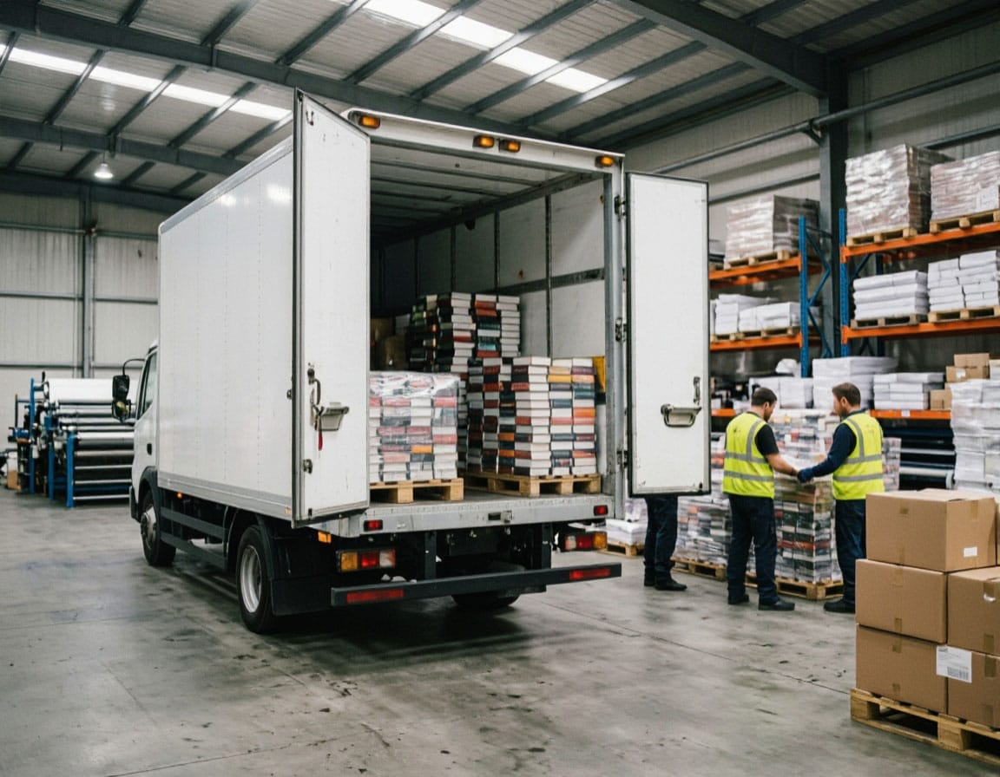
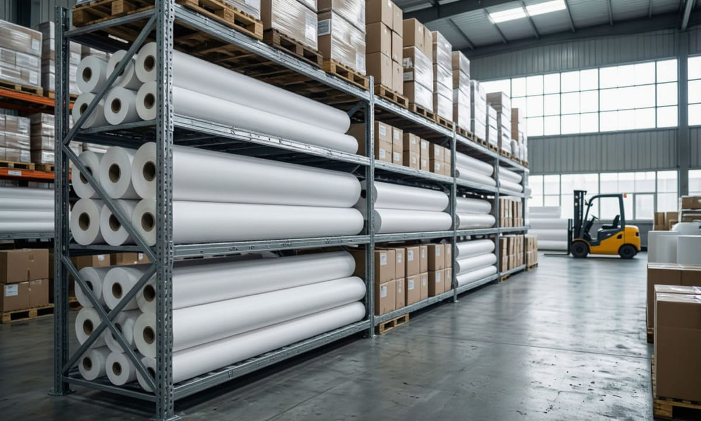

ЭТрН после 1 сентября: что изменилось для типографий
Логистика · Новые правила отгрузки
С 1 сентября 2026 года электронная транспортная накладная (ЭТрН) стала обязательной при автомобильных перевозках по договору перевозки, кроме установленных исключений.
140-ФЗзакон от 7 июня 2025 года
11 млндокументов за первые 10 дней
1 марта 2027до этой даты — устные замечания вместо штрафов

Для типографии новые правила затрагивают отгрузку готовой продукции, поступление материалов, отгрузку со склада и взаимодействие с перевозчиками. Первые недели работы новой системы выявили сложности с ручным оформлением и обменом документами между операторами.
С сентября транспортная накладная, заказ и заявка при автомобильных перевозках по общему правилу формируются в электронном виде. Документы передаются через операторов информационных систем электронных перевозочных документов (ИС ЭПД) в государственную информационную систему электронных перевозочных документов (ГИС ЭПД). Основание — Федеральный закон от 7 июня 2025 года № 140-ФЗ.
01
Когда нужна ЭТрН
При доставке готового тиража сторонним перевозчиком типография может выступать грузоотправителем и составлять ЭТрН. При поставке бумаги, картона, красок, расходных материалов или оборудования она может быть грузополучателем и подписывать свою часть документа. Обязанность возникает при перевозке по договору перевозки независимо от массы автомобиля: Минтранс отдельно разъяснял применение ЭТрН и для машин массой до 3,5 т.
Нужна: сторонний перевозчик
Есть договор перевозки — значит, нужна транспортная накладная. Это относится и к случаю, когда покупатель сам привлекает стороннего перевозчика.
Не нужна: свой транспорт
Типография перевозит собственную продукцию собственным транспортом без договора перевозки. То же — самовывоз собственным автомобилем покупателя.
Роль грузоотправителя определяется условиями договора и конкретной схемой предъявления груза; сам факт оплаты перевозки или физической погрузки эту роль однозначно не определяет. Такой подход соответствует разбору норм Устава автомобильного транспорта в «Базе ЭТрН» Signl.
Для перемещений между площадками одной компании действует отдельное исключение: при перевозке собственным транспортом ЭТрН не возникает. При привлечении стороннего перевозчика транспортная накладная нужна, но приказ Минтранса № 262 допускает бумажную форму, если грузоотправитель и грузополучатель — одно лицо.
Одна накладная на несколько партий
Одну ЭТрН можно оформить на несколько партий, если они перевозятся одним транспортным средством от одного грузоотправителя одному грузополучателю, из одного места погрузки в одно место выгрузки. При замене автомобиля новая накладная не требуется, если перевозчик остаётся прежним.

Склад типографии: бумага и готовая продукция перед отгрузкой02
Кто подписывает документ на складе
В ЭТрН предусмотрена отдельная роль лица, осуществляющего погрузку (ЛОП). Оно может совпадать с грузоотправителем или быть другой организацией — например, сторонним складом, где находится готовая продукция.
Первый обязательный файл ЭТрН содержит сведения грузоотправителя, параметры перевозки, данные груза и обстоятельства погрузки. Его подписывает грузоотправитель или ЛОП. Затем перевозчик оформляет приём груза, грузополучатель — приёмку, перевозчик — выдачу.
Т1Грузоотправитель или ЛОП
Сведения об отправителе, параметры перевозки, данные груза, обстоятельства погрузки.
Т2Перевозчик
Оформляет приём груза.
Т3Грузополучатель
Оформляет приёмку груза.
Т4Перевозчик
Оформляет выдачу груза.
На рынке эти четыре файла обычно называют Т1–Т4, хотя таких обозначений в нормативных актах нет. Файл, поступивший в ГИС ЭПД без предыдущего обязательного файла, может остаться в режиме ожидания.
Склад становится участником документооборота
Для типографии это означает, что склад становится непосредственным участником электронного документооборота. Нужно заранее определить, кто подписывает документы при фактической передаче и приёмке груза и какие полномочия для этого требуются.
Оформление отгрузки на складе — теперь и в электронном виде03
Для периодики сделали исключение. Бумага и ЭТрН — нельзя смешивать
С 19 сентября действует приказ Минтранса от 2 сентября 2026 года № 391, зарегистрированный Минюстом 4 сентября за № 88150. Он расширил перечень случаев оформления документов на бумаге с восьми до двенадцати. В пункте 11 указана перевозка автомобильным транспортом периодических печатных изданий. Ограничения «социально значимые» в окончательной редакции нет. Минтранс отдельно сообщил о включении периодических печатных изданий в перечень исключений.
Только периодика
Для книг, каталогов, упаковки, этикетки и другой печатной продукции исключений не установлено.
Минтранс применяет принцип непрерывности документооборота: перевозочный документ, начатый на бумаге, завершается на бумаге; начатый электронно — в электронной форме. Смешанный документооборот по одному перевозочному документу не допускается.
После 1 сентября некоторые компании продолжили оформлять бумажные документы как подстраховку. Директор по закупкам транспортных услуг FM Logistic Эдуард Миронов сказал «Коммерсанту», что это позволяет компаниям не останавливать отгрузки при сбоях. Такая практика не меняет установленного Минтрансом порядка оформления ЭПД.
04
Что показали первые недели
По данным Минтранса, за первые десять дней обязательного режима в ГИС ЭПД оформили более 11 млн документов. Ведомство указало, что основной прирост обеспечили транспортные накладные, заказы и заявки, а также экспедиторские документы.
38 тыс.организаций подключено на 1 сентября
16аккредитованных операторов ИС ЭПД, 14 из них — в продуктивном контуре
14,2%профилей перевозчиков на ATI.SU с загруженной КЭП на 9 сентября (было 9,8% на 24 августа)
75 → 1059профилей с реальной ЭТрН за 30 дней
Статистика числа участников требует отдельной оговорки. На 1 сентября Минтранс сообщал о более чем 38 тыс. подключённых организаций и более чем 50 млн документов за всё время работы системы. В том же релизе указывались 16 аккредитованных операторов ИС ЭПД, из которых 14 работали в продуктивном контуре. Отдельный замер провели отраслевое медиа «Ассоциация Перевозчиков» и ATI.SU: на 9 сентября квалифицированная электронная подпись (КЭП) была загружена у 17 тыс. из 119 623 исследованных профилей перевозчиков — 14,2%. В предыдущем замере 24 августа таких профилей было 11 634, или 9,8%. Число профилей, где за последние 30 дней появилась реальная ЭТрН, увеличилось с 75 до 1059. Эти данные относятся к базе ATI.SU; исследование проводилось методом сплошного просмотра публичных профилей площадки.
Где возникли сложности
«Коммерсантъ» 11 сентября собрал первые отзывы компаний:
Ручное заполнение электронных форм без автоматизации занимает примерно 40 минут против трёх минут для бумажного документа.Игорь Ребельский, учредитель VIG Trans
В процесс приходится включать бухгалтерию, менеджеров и кладовщиков.Татьяна Патужная, сооснователь Sigma
Наблюдаются зависание документов и необновляющиеся статусы при работе контрагентов через разных операторов.Сергей Верещагин, гендиректор «ЛогЛаб»
Минтранс в том же материале напомнил, что ГИС ЭПД работала в добровольном режиме с 2022 года и у бизнеса было четыре года для тестирования системы. Крупные компании использовали её до введения обязательного режима.
Идентификаторы участников
Отдельная практическая проблема — идентификаторы. У одной организации могут использоваться разные идентификаторы у нескольких операторов, подразделений или площадок. Идентификатор обычного ЭДО также может не совпадать с тем, на который принимаются перевозочные документы. Перед регулярной работой имеет смысл сверить с контрагентом актуальный идентификатор ИС ЭПД и закрепить его в учётной системе.
Межоператорский обмен развивается уже в обязательном режиме. По данным самого «Контура», за первые три недели сентября более 100 тыс. его клиентов работали с ЭПД, количество роуминговых связей превысило 300 тыс., через межоператорский обмен прошло более 1 млн документов. Компания оценивает долю своей инфраструктуры примерно в 60% трафика ГИС ЭПД. Эти показатели относятся к инфраструктуре одного оператора и приведены по его данным.
05
Что делать при сбое и что будет до 1 марта
Сбой — не повод для бумаги
Техническая проблема не даёт автоматического права заменить ЭТрН бумажной накладной. Бумажная форма допустима в случаях, установленных перечнем Минтранса.
Минтранс разместил отдельный регламент действий при нештатных ситуациях. При временной недоступности центрального контура документы могут накапливаться у операторов и передаваться в ГИС ЭПД после восстановления связи. Аналогичный принцип ведомство описывало ещё до обязательного запуска системы.
Это означает необходимость заранее определить действия склада и логиста при недоступности сервиса: как фиксируется сбой, кто связывается с оператором, можно ли продолжить конкретную перевозку и подпадает ли ситуация под одно из бумажных исключений.
До 1 марта — устное замечание
Пункт 6 перечня поручений Президента от 19 июля 2026 года № Пр-1784 предписывает МВД и Ространснадзору до 1 марта 2027 года ограничиваться устным замечанием, если у участника перевозки отсутствуют электронные перевозочные документы, но предъявлены бумажные. Поручение относится к контролю со стороны МВД и Ространснадзора и не отменяет обязательность ЭПД с 1 сентября.
Налоговые последствия — отдельный вопрос
В комментарии «Коммерсанту» ФНС указала: бумажная транспортная накладная сама по себе не является основанием для непризнания расходов или отказа в вычете НДС при наличии доказательств объективной невозможности сформировать документ в электронной форме. Служба рассматривает обстоятельства конкретной перевозки в совокупности.
06
Что проверить внутри типографии
Разобрать каждую используемую схему доставки: кто заключает договор перевозки, кто является грузоотправителем и грузополучателем, кто осуществляет погрузку, кто формирует ЭТрН и кто подписывает документы при передаче и приёмке груза.
После подключения к оператору определить сотрудников, которые будут работать с ЭПД, выдать им права доступа, оформить электронные подписи и при необходимости машиночитаемые доверенности. Такой порядок прямо рекомендует ФНС. Для вечерних и выходных отгрузок доступ и полномочия должны соответствовать фактическому графику склада.
Сверить идентификаторы постоянных перевозчиков и заказчиков, проверить роуминг с используемыми ими операторами.
Пройти хотя бы одну полную цепочку от формирования первого файла до приёмки груза.
Если данные заказа и груза приходится вручную переносить из системы управления производством (АСУ или MIS, management information system) или 1С в интерфейс оператора, а сведения об автомобиле и водителе получать отдельно и вводить заново, этот участок остаётся ручным.
Частные сценарии — самовывоз, роли ЛОП, последовательность файлов, ошибки идентификаторов и действия при сбоях — собраны в редакционной «Базе ЭТрН» Signl. Ответы там сопровождаются ссылками на нормы и датами проверки; при применении конкретного решения норму стоит сверять с действующей редакцией.
Электронные и бумажные документы: важно не смешивать
В «Лазури» с новыми правилами уже разобрались
Мы изучили новые требования заранее, подключились к электронному документообороту и отработали весь путь накладной от оформления до приёмки груза. Отгрузка тиража идёт в штатном режиме, а вам не нужно вникать в детали: перевозочные документы мы оформляем сами. Программу и внутренние процессы продолжаем дорабатывать по мере появления новых требований.
Статья публикуется с разрешения редакции медиапроекта
«ПринтИнсайдер»
(printinsider.ru) — автор проекта Дмитрий Старцев. «ПринтИнсайдер» — медиапроект по печатным технологиям: от железа и расходки до бизнес-моделей и новых ниш.